2 MongoDB 基本操作及聚合操作实战
增删改查操作
1 使用 insert 完成插入操作
操作格式:
db.<集合>.insertOne(<JSON对象>)
db.<集合>.insertMany([<JSON 1>, <JSON 2>, ...<JSON n>])
示例:
db.fruit.insertOne({name: "apple"})
db.fruit.insertMany([
{name: "apple"},
{name: "pear"},
{name: "orange"}
])
使用 find 查询文档
关于 find:
- find 是 MongoDB 中查询数据的基本指令，相当于 SQL 中的 SELECT 。
- find 返回的是游标。
find 示例:
db.movies.find( { "year" : 1975 } ) //单条件查询
db.movies.find( { "year" : 1989, "title" : "Batman" } ) //多条件and查询
db.movies.find( { $and : [ {"title" : "Batman"}, { "category" : "action" }] } ) // and的另一种形式
db.movies.find( { $or: [{"year" : 1989}, {"title" : "Batman"}] } ) //多条件or查询
db.movies.find( { "title" : /^B/} ) //按正则表达式查找
查询条件对照表
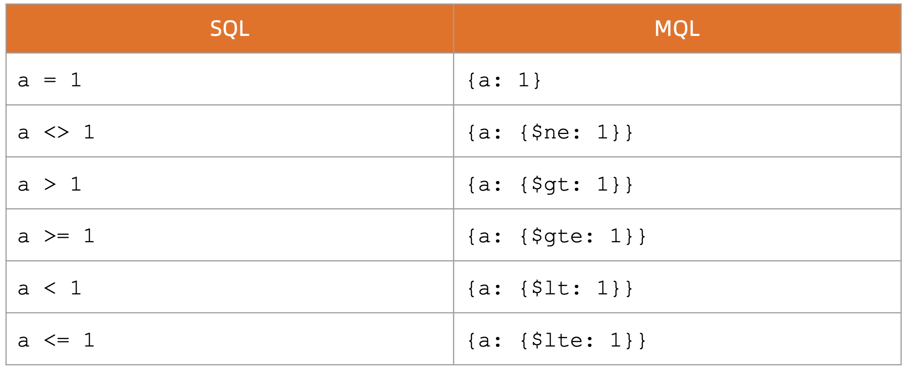
查询逻辑对照表
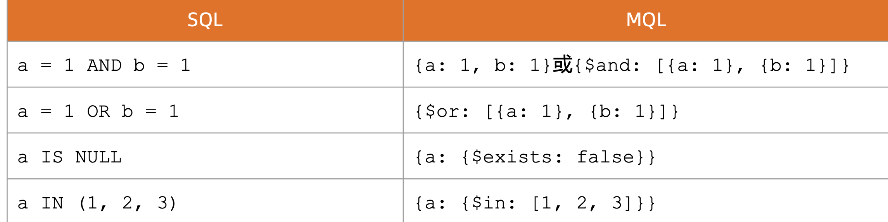
查询逻辑运算符
$lt: 存在并小于$lte: 存在并小于等于$gt: 存在并大于$gte: 存在并大于等于$ne: 不存在或存在但不等于$in: 存在并在指定数组中$nin: 不存在或不在指定数组中$or: 匹配两个或多个条件中的一个$and: 匹配全部条件
使用 find 搜索子文档
- find 支持使用
field.sub_field的形式查询子文档。假设有一个文档:
db.fruit.insertOne({
name: "apple",
from: {
country: "China",
province: "Guangdon"
} })
考虑以下查询的意义:
db.fruit.find( { "from.country" : "China" } )
> db.fruit.find( { "from.country" : "China" } )
{ "_id" : ObjectId("626d0d3c23c7ad7cc7cb0e40"), "name" : "apple", "from" : { "country" : "China", "province" : "Guangdon" } }
db.fruit.find( { "from" : {country: "China"} } )
>
Nothing
使用 find 搜索数组
find 支持对数组中的元素进行搜索。假设有一个文档:
db.fruit.insert([
{ "name" : "Apple", color: ["red", "green" ] },
{ "name" : "Mango", color: ["yellow", "green"] }
])
考虑以下查询的意义:
> db.fruit.find({color: "red"})
{ "_id" : ObjectId("626d19c123c7ad7cc7cb0e41"), "name" : "Apple", "color" : [ "red", "green" ] }
db.fruit.find({$or: [{color: "red"}, {color: "yellow"}]} )
{ "_id" : ObjectId("626d19c123c7ad7cc7cb0e41"), "name" : "Apple", "color" : [ "red", "green" ] }
{ "_id" : ObjectId("626d19c123c7ad7cc7cb0e42"), "name" : "Mango", "color" : [ "yellow", "green" ] }
使用 find 搜索数组中的对象
考虑以下文档，在其中搜索
db.movies.insertOne( {
"title" : "Raiders of the Lost Ark",
"filming_locations" : [
{ "city" : "Los Angeles", "state" : "CA", "country" : "USA" },
{ "city" : "Rome", "state" : "Lazio", "country" : "Italy" },
{ "city" : "Florence", "state" : "SC", "country" : "USA" }
]
})
// 查找城市是 Rome 的记录
db.movies.find({"filming_locations.city": "Rome"})
{ "_id" : ObjectId("626d1f1323c7ad7cc7cb0e43"), "title" : "Raiders of the Lost Ark", "filming_locations" : [ { "city" : "Los Angeles", "state" : "CA", "country" : "USA" }, { "city" : "Rome", "state" : "Lazio", "country" : "Italy" }, { "city" : "Florence", "state" : "SC", "country" : "USA" } ] }
使用 find 搜索数组中的对象
在数组中搜索子对象的多个字段时，如果使用 $elemMatch，它表示必须是同一个 子对象满足多个条件。考虑以下两个查询:
db.getCollection('movies').find({
"filming_locations.city": "Rome",
"filming_locations.country": "USA"
})
{ "_id" : ObjectId("626d1f1323c7ad7cc7cb0e43"), "title" : "Raiders of the Lost Ark", "filming_locations" : [ { "city" : "Los Angeles", "state" : "CA", "country" : "USA" }, { "city" : "Rome", "state" : "Lazio", "country" : "Italy" }, { "city" : "Florence", "state" : "SC", "country" : "USA" } ] }
db.getCollection('movies').find({
"filming_locations": {
$elemMatch:{"city":"Rome", "country": "USA"}
} })
控制 find 返回的字段
find可以指定只返回指定的字段;_id字段必须明确指明不返回，否则默认返回;- 在 MongoDB 中我们称这为投影(projection);
db.movies.find({"category": "action"},{"_id":0, title:1})"_id":0: 不返回_idtitle:1: 返回title
使用 remove 删除文档
- remove 命令需要配合查询条件使用;
- 匹配查询条件的的文档会被删除;
- 指定一个空文档条件会删除所有文档;
- 以下示例:
db.testcol.remove( { a : 1 } ) // 删除a 等于1的记录
db.testcol.remove( { a : { $lt : 5 } } ) // 删除a 小于5的记录
db.testcol.remove( { } ) // 删除所有记录 db.testcol.remove() //报错
db.testcol.remove() //报错
使用 update 更新文档
Update 操作执行格式:db.<集合>.update(<查询条件>, <更新字段>)
以以下数据为例:
db.fruit.insertMany([
{name: "apple"},
{name: "pear"},
{name: "orange"}
])
db.fruit.updateOne({name: "apple"}, {$set: {from: "China"}})
- 查询 name 为 apple 的记录
- 将找到记录的 from 设置为 China
> db.fruit.updateOne({name: "apple"}, {$set: {from: "China"}})
{ "acknowledged" : true, "matchedCount" : 1, "modifiedCount" : 1 }
> db.fruit.find({name: "apple"}).pretty()
{
"_id" : ObjectId("626d26f023c7ad7cc7cb0e44"),
"name" : "apple",
"from" : "China"
}
使用 update 更新文档
- 使用 updateOne 表示无论条件匹配多少条记录，始终只更新第一条;
- 使用 updateMany 表示条件匹配多少条就更新多少条;
updateOne/updateMany方法要求更新条件部分必须具有以下之一，否则将报错:$set/$unset$push/$pushAll/$pop$pull/$pullAll$addToSet
db.fruit.updateOne({name: "apple"}, {from: "China"})
// 报错
uncaught exception: Error: the update operation document must contain atomic operators :
DBCollection.prototype.updateOne@src/mongo/shell/crud_api.js:565:19
@(shell):1:1
使用 update 更新数组
$push: 增加一个对象到数组底部$pushAll: 增加多个对象到数组底部$pop: 从数组底部删除一个对象$pull: 如果匹配指定的值，从数组中删除相应的对象$pullAll: 如果匹配任意的值，从数据中删除相应的对象$addToSet: 如果不存在则增加一个值到数组
使用 drop 删除集合
- 使用
db.<集合>.drop()来删除一个集合 - 集合中的全部文档都会被删除
- 集合相关的索引也会被删除
db.colToBeDropped.drop()
> db.fruit.drop()
true
使用 dropDatabase 删除数据库
- 使用
db.dropDatabase()来删除数据库 - 数据库相应文件也会被删除，磁盘空间将被释放
use tempDB
db.dropDatabase()
show collections // No collections
show dbs // The db is gone
2 Hello World 程序开发（Python)
2-1 安装 Python MongoDB 驱动程序
安装 MongoDB 驱动
在 Python 中使用 MongoDB 之前必须先安装用于访问数据库的驱动程序:
pip install pymongo
检查驱动程序
在 python 交互模式下导入 pymongo，检查驱动是否已正确安装:
import pymongo
pymongo.version
2-2 创建连接
确定 MongoDB 连接串
使用驱动连接到 MongoDB 集群只需要指定 MongoDB 连接字符串即可。其基本格式可 以参考文档: Connection String URI Format 最简单的形式是
mongodb://数据库服务器主机地址:端口号- 如:
mongodb://127.0.0.1:27017
初始化数据库连接
from pymongo import MongoClient
uri = "mongodb://192.168.1.44:27017"
client = MongoClient(uri)
print(client)
$ python3 mongo.py
MongoClient(host=['192.168.1.44:27017'], document_class=dict, tz_aware=False, connect=True)
2-3 数据库操作:插入用户
初始化数据库和集合
db = client["eshop"]
user_coll = db["users"]
插入一条新的用户数据
new_user = {"username": "nina", "password": "xxxx", "email":
"123456@qq.com "}
result = user_coll.insert_one(new_user)
print result
from pymongo import MongoClient
uri = "mongodb://192.168.1.44:27017"
client = MongoClient(uri)
db = client["eshop"]
user_coll = db["users"]
new_user = {"username":"nina", "password":"xxxx", "email": "123456@qq.com"}
result = user_coll.insert_one(new_user)
result
show dbs;
admin 0.000GB
aggdemo 0.000GB
appdb 0.001GB
config 0.000GB
eshop 0.000GB
...
> use eshop;
switched to db eshop
> show collections;
users
> db.users.find()
{ "_id" : ObjectId("626d3ec17157426c6e22abcf"), "username" : "nina", "password" : "xxxx", "email" : "123456@qq.com" }
注意:我们并没有提前创建数据库和表/集合
2-4 更新用户
需求变化，要求修改用户属性，增加字段phone
result = user_coll.update_one({ "username": "nina"},
{ "$set": { "phone": "123456789"} }
)
print result
注意:我们并没有去数据库修改表结构
from pymongo import MongoClient
uri = "mongodb://192.168.1.44:27017"
client = MongoClient(uri)
db = client["eshop"]
user_coll = db["users"]
# new_user = {"username":"nina", "password":"xxxx", "email": "123456@qq.com"}
# result = user_coll.insert_one(new_user)
result = user_coll.update_one({"username": "nina"},
{ "$set": { "phone": "123456789"} }
)
result
> db.users.find()
{ "_id" : ObjectId("626d3ec17157426c6e22abcf"), "username" : "nina", "password" : "xxxx", "email" : "123456@qq.com", "phone" : "123456789" }
2-5 总结
- 使用 MongoDB 驱动程序操作 MongoDB 的 API 简单易行。
- 尽管大家使用的编程语言可能各不相同，但 MongoDB 驱动的设计是依照统一的规 范制定，无论使用哪种语言，其原理和 API 方法都非常相似。因此只要掌握一种语 言的驱动，切换到其他语言将十分容易。
3 聚合查詢
3-1 什么是 MongoDB 聚合框架
MongoDB 聚合框架(Aggregation Framework)是一个计算框架，它可以:
- 作用在一个或几个集合上;
- 对集合中的数据进行的一系列运算;
- 将这些数据转化为期望的形式;
从效果而言，聚合框架相当于 SQL 查询中的:
- GROUP BY
- LEFT OUTER JOIN
- AS等
3-2 管道(Pipeline)和步骤(Stage)
整个聚合运算过程称为管道(Pipeline)，它是由多个步骤(Stage)组成的， 每个管道:
- 接受一系列文档(原始数据);
- 每个步骤对这些文档进行一系列运算;
- 结果文档输出给下一个步骤
聚合运算的基本格式
pipeline = [$stage1, $stage2, ...$stageN];
db.<COLLECTION>.aggregate(
pipeline,
{ options } );
常见步骤
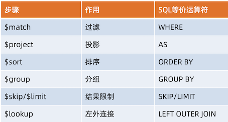
常见步骤中的运算符
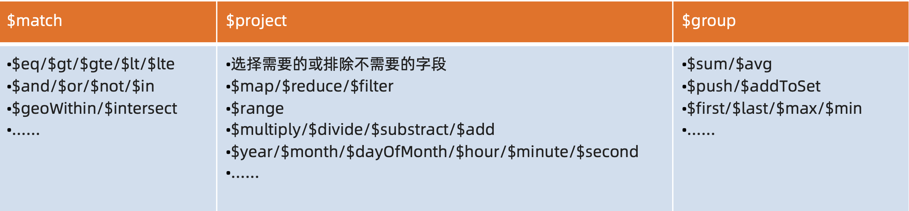
常见步骤
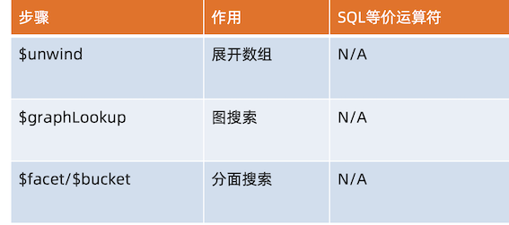
3-3 聚合运算的使用场景
聚合查询可以用于OLAP和OLTP场景。例如:
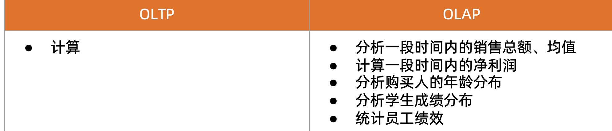
3-4 MQL 常用步骤与 SQL 对比
SELECT
FIRST_NAME AS `名`, LAST_NAME AS `姓`
FROM Users
WHERE GENDER = '男'
SKIP 100 LIMIT 20
db.users.aggregate([
{$match: {gender: ’’男”}},
{$skip: 100},
{$limit: 20},
{$project: {
'名': '$first_name',
'姓': '$last_name'
}}
]);
SELECT DEPARTMENT,
COUNT(NULL) AS EMP_QTY
FROM Users
WHERE GENDER = '女'
GROUP BY DEPARTMENT
HAVING COUNT(*) < 10
db.users.aggregate([
{$match: {gender: '女'}},
{$group: {
_id: '$DEPARTMENT’,
emp_qty: {$sum: 1}
}},
{$match: {emp_qty: {$lt: 10}}}
]);
MQL 特有步骤 $unwind
db.students.insertOne(
{
name:'张三',
score:[
{subject:'语文',score:84},
{subject:'数学',score:90},
{subject:'外语',score:69}
]
})
> db.students.findOne()
{
"_id" : ObjectId("626dead023c7ad7cc7cb0e47"),
"name" : "张三",
"score" : [
{
"subject" : "语文",
"score" : 84
},
{
"subject" : "数学",
"score" : 90
},
{
"subject" : "外语",
"score" : 69
}
]
}
db.students.aggregate([{$unwind: '$score'}])
{ "_id" : ObjectId("626dead023c7ad7cc7cb0e47"), "name" : "张三", "score" : { "subject" : "语文", "score" : 84 } }
{ "_id" : ObjectId("626dead023c7ad7cc7cb0e47"), "name" : "张三", "score" : { "subject" : "数学", "score" : 90 } }
{ "_id" : ObjectId("626dead023c7ad7cc7cb0e47"), "name" : "张三", "score" : { "subject" : "外语", "score" : 69 } }
MQL 特有步骤 $bucket
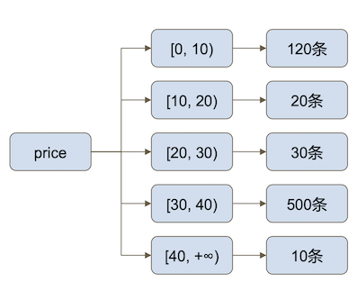
db.products.aggregate([{
$bucket:{
groupBy: "$price",
boundaries: [0,10,20,30,40],
default: "Other",
output:{"count":{$sum:1}}
}
}])
MQL 特有步骤 $facet
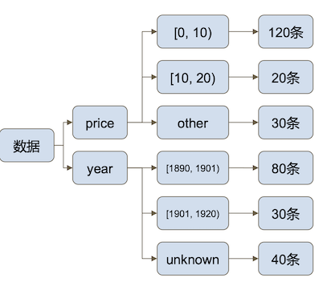
db.products.aggregate([{
$facet:{
price:{
$bucket:{...}
}, year:{
$bucket:{...}
}
}
}])
3 聚合查询实验
聚合实验数据模型
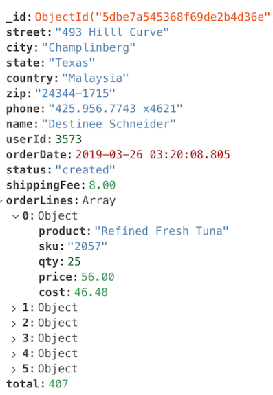
3-1 聚合实验一:总销量
计算到目前为止的所有订单的总销售额
db.orders.aggregate([
{ $group:
{
_id: null,
total: { $sum: "$total" }
}
}
])
{ "_id" : null, "total" : NumberDecimal("44019609") }
3-2 聚合实验二:订单金额汇总
查询2019年第一季度(1月1日~3月31日)已完成订单(completed)的订单总金 额和订单总数
db.orders.aggregate([
// 步骤1:匹配条件
{ $match: { status: "completed", orderDate: {
$gte: ISODate("2019-01-01"),
$lt: ISODate("2019-04-01") } } },
// 步骤二:聚合订单总金额、总运费、总数量
{ $group: {
_id: null,
total: { $sum: "$total" },
shippingFee: { $sum: "$shippingFee" },
count: { $sum: 1 } } },
{ $project: {
// 计算总金额
grandTotal: { $add: ["$total", "$shippingFee"] },
count: 1,
_id: 0 } }
])
{ "count" : 5875, "grandTotal" : NumberDecimal("2636376.00") }
3-3 Run with compass Aggregation
$match
{status: "completed",
orderDate: {
$gte: ISODate("2019-01-01"),
$lt: ISODate("2019-04-01")
}
}
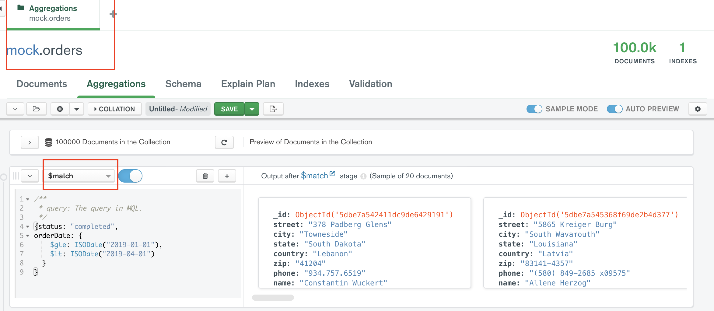
$group
{
_id: null,
total: { $sum: "$total" },
shippingFee: { $sum: "$shippingFee" },
count: { $sum: 1 }
}
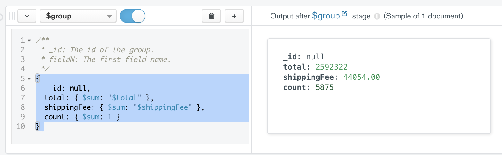
$group
{
// 计算总金额
grandTotal: { $add: ["$total", "$shippingFee"] },
count: 1,
_id: 0
}
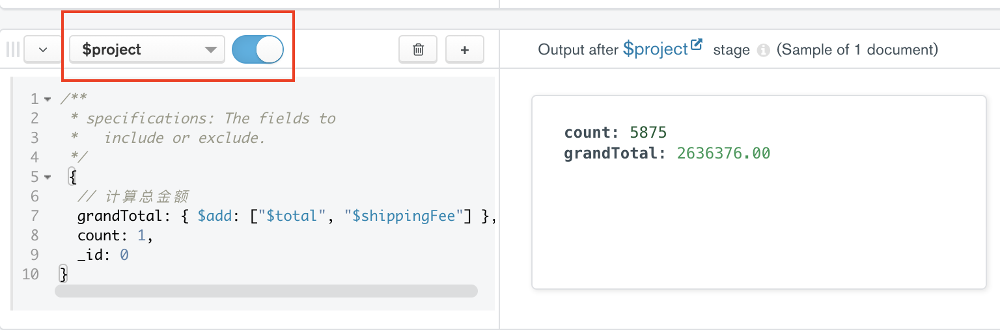
Export: python3 and ....
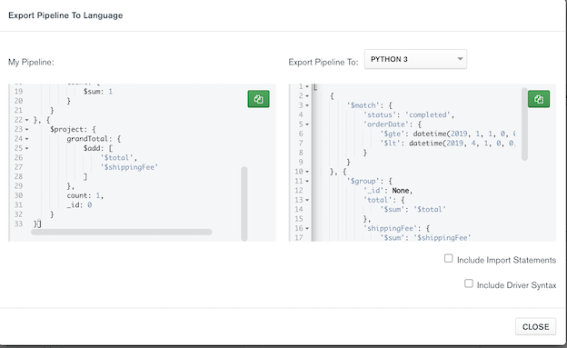